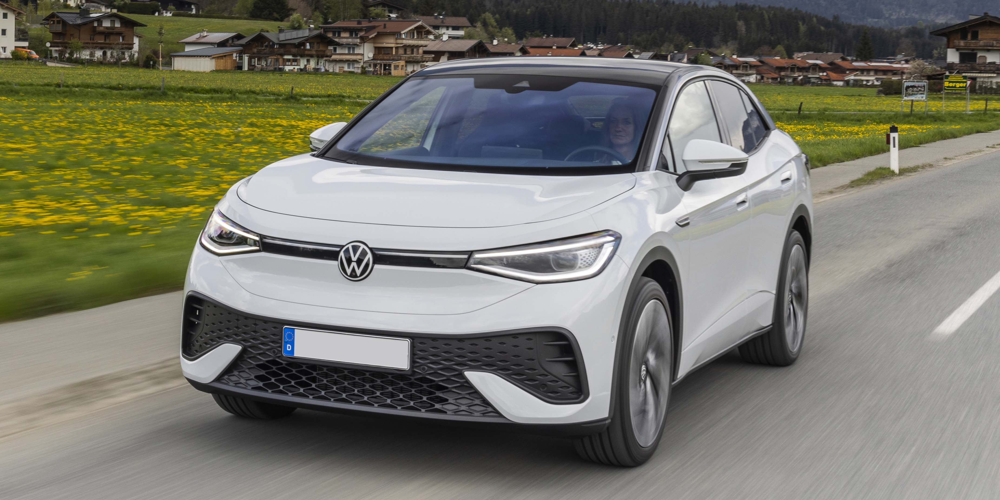

In this section I talk about car body types and my opinions on them.
No one likes SUVs. Get over yourself. If you want something that can go off road get a 4x4 NOT an SUV. Grow up.
Seriously. Who looks at this (VW ID.5) and goes yes... this is sporty, has lots of utility and is a great vehicle!
That's right, no one with an ounce of brain cells.
I hate SUVs a lot. I have many problems with them. So here is obviously the perfect place to talk about why SUVs are so stupid.
Firstly, SUVs are basically just hatchbacks on stilts. Don't believe me? Here are some fun facts. The VW ID.5 (shown above) has a smaller standard boot capacity (no seats folded down) than a Skoda Octavia. The boot capacity of the VW is 549 litres whereas the Skoda has a capacity of 600 (according to Google). The figures are for the 2023 model of cars (which is accurate for when I am writing this in 2023). With the seats folded down the VW has 1561L of space and the Skoda has 1555L of space. I will admit that the Skoda has officially less space than the VW with the seats down. However, there are only 6L of difference (not much at all, about a quarter of the average rucksack) and I believe that most of the time people are going to care about bootspace with the seats up. Normally SUVs are bought by people who want a higher seating position in the road, with space of the kids in the back and enough boot space to go on holiday.
VW Figures Skoda FiguresSecondly, they don't do their job. I am going to estimate that roughly 90% of SUVs are NOT SPORTY. Obviously there are exceptions, for example the Lamborghini Urus, the Ferrari Purosangue, Range Rover SVR, etc. Your average Peugeot 2008 or VW T-roc is not a sporty car, for example my dad's car, a 2019 Peugeot 2008. It has a 1.2L engine with an automatic gearbox. That doesn't sound very sporty. Then you have the fact that it is raised off the ground to have some offroad ability, this means it doesn't handle very well in the corners. What does that result in? A car that doesn't feel sporty. For a class of car with "sports" in the name it's not really living up to expectations. They are vehicles, I will accept that, but the majority of SUVs on the road are not sporty and have no better utility than a regular hatchback.
The final thing I want to talk about is the price. Now I have no plans anytime soon of buying an SUV, but I feel sorry for the people that are buying them. They are being ripped off. SUVs are so much more expensive than hatchbacks and all because they are a tiny bit higher off the ground. If you want to follow the crowd and get one of these useless things then sure, but I personally don't want to be ripped off for something that isn't very useful.
Of course this whole website is full of my opinions, you shouldn't really take anything I say and believe it. After all, I am just someone on the internet posting their opinions. If you own an SUV and have decided that actually you want something that isn't one, I have come up with a list of cars that are better than SUVs for certain tasks.
Hatchback - you can get a hatchback for much less than a small/mid size SUV, they will have roughly the same boot space, they handle better than SUVs and you could even get a sporty one like the VW Golf GTI or the Audi RS3. Ideal for the family and if you want performance you can certainly get performance out of a hatchback. They will also be slightly more economical than your SUV because they aren't as tall. If you are looking for a spacious hatchback why not look at Skodas. The Octavia is optimal for space for luggage and passengers.
Estate - another great alternative to an SUV. Loads of boot space, especially for long road trips or if you want to take your dog somewhere and don't want them messing up the back seats. My girlfriend's dad owns a 2008 Audi A6 Avant (the 2.0 diesel) and I think it is lovely. Lovely interior (leather seats, great infotainment system - in my opinion, which is slighly old fashioned when it comes to cars), drives really smoothly and has huge amounts of space in the back. I sat next to a ladder one time when he was taking me home. Again, like hatchbacks you can get performance estates (ever heard of the BMW M3 touring or the M5 touring). If I had a family and a dog, I would own an estate. I know the looks of estates aren't some peoples up of tea but I personally prefer them SO MUCH in comparison to an SUV.
MPV - if you have a large family and need a lot of seats in your car, then this is the one for you. I don't like MPVs but I wear a condom so I don't have kids. However, I would much rather drive what is basically a van with seats than an SUV. My dad used to have a 2010 Vauxhall Zafira. He bought the car because it had 7 seats - ideal for taking us and his parents around when we visited them. I don't think we ever sat in the back row of that car apart from when he test drove it. Ideal for people who have too many kids or need a HUGE amount of space. They are basically tall estate cars. Still better than an SUV, but a type of vehicle I don't particularly like.
As a kid I often thought about in the future if I could make a car that was both capable of going off road and also being sporty. In my head it was possible, but in my new found wisdom (being 19) I realise that what I was thinking of was basically a coupe with air suspension that could raise it very high off the ground. That was my idea as a kid. The closest thing I have seen to what I dreamt of as a kid was the Ferrari Purosangue. The average Joe cannot afford that car, but it's nice to think that someone got close.
In my opinion, hatchbacks are great. It's a shame that no one buys them anymore but when I think of a practical yet compact solution to everything, a hatchback is the one. Maybe I am biased because I drive one. But why are hatchbacks so great? Well, for starters you can get tiny 3 door ones like mine (Skoda Citigo), perfect for a first car in the UK, which still has a fair amount of space, and is very cheap and economical to run. You can also get slightly larger ones that fit the whole family in, providing you have a family of 5 or less people. The hatchback doesn't just come in a fairly boxy shape though, you could get a Citigo, Golf or Toyota Yaris, all which have a very traditional hatchback shape and are perfect for driving round town but can also do some motorway driving, or you could get something like a Honda Civic or the Skoda Octavia, both hatchbacks but they look to me more like saloons. I think one of the reasons hatchbacks are popular is the variety of tasks they can do. You can fit the whole family in them, and yet if you have the money to afford a performance one, you can also go quickly. They are little pocket rockets. The Hot Hatch is potentially the perfect car. Obviously you probably aren't going to tow very much using a hatchback, but they are ideal for most problems.
I like estate cars a lot. Whoever came up with them is simply a genius. You take a regular saloon car, perfect size for the family, and attach the rear end of a hatchback to the boot. These things are the most spacious (bar vans) for carrying all the stuff you could possibly need. There is a reason they used to be so popular. Not to mention the new BMW M3 comes as an estate - something we have been waiting for for ages and it has turned up and wow. I love it!! Anyway this section is about estate cars, not just one M3 touring. As a student I don't particularly need an estate car, all my stuff fits in the back of the Citigo. But if I was to have a family, and a hatchback/saloon didn't suffice, I would get an estate. Like hatchbacks, you can also get performance estate cars (like the M3 touring we talked about in the previous paragraph). These things really sell themselves to me, practical and fast, and because they have large boots they could even be a little tail happy? I am not sure having never driven one, but I would like to think if you had a rear wheel drive one it certainly could be.
These won't take long to talk about either. Ideal for a business men and their fellow associates, as well as carrying the family around on the weekend.
Epic. Mostly.
I wish I had one.
Yes please.
Wow.